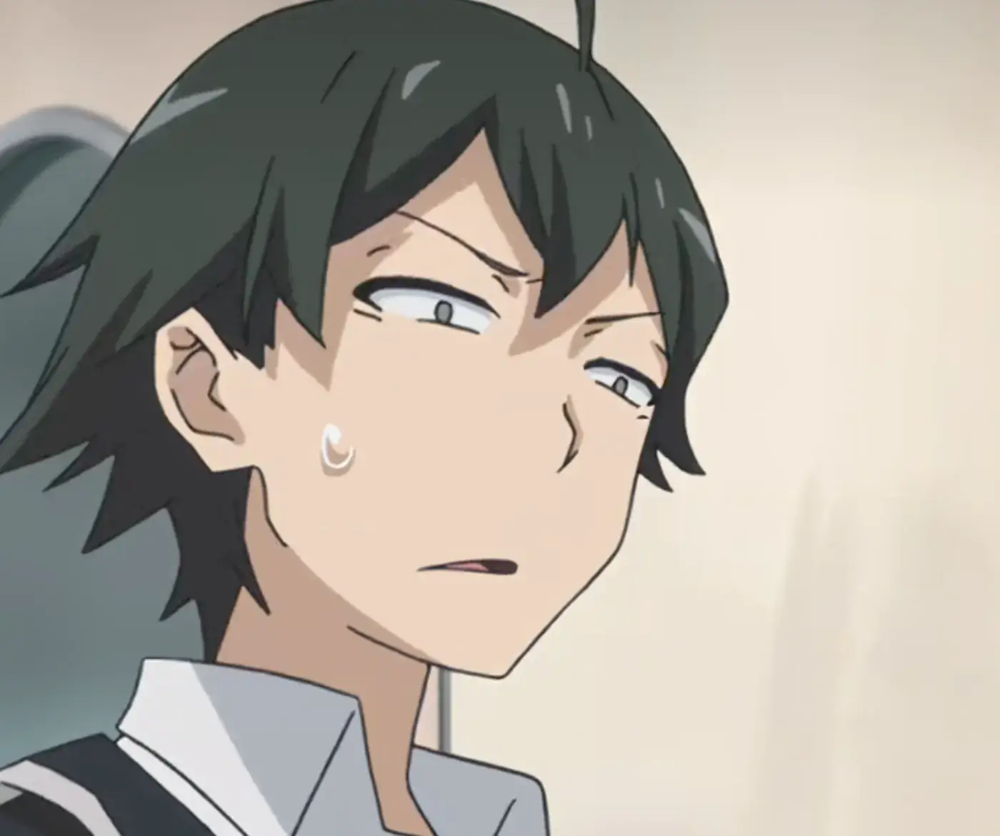
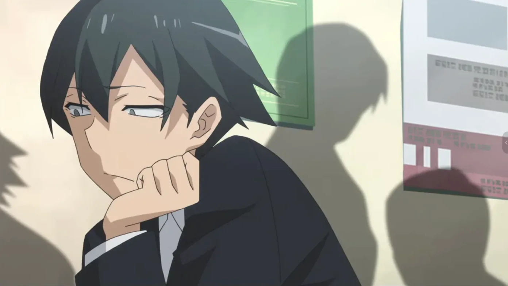
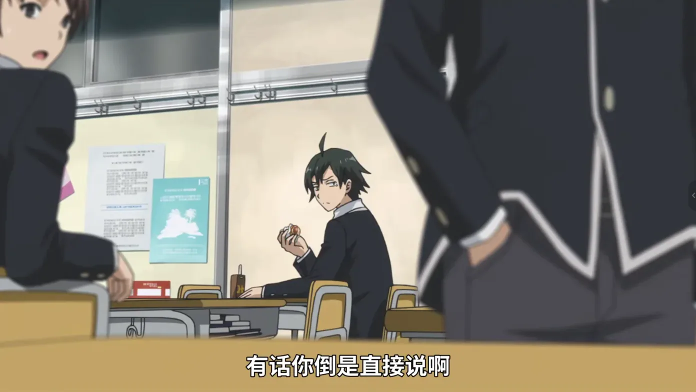
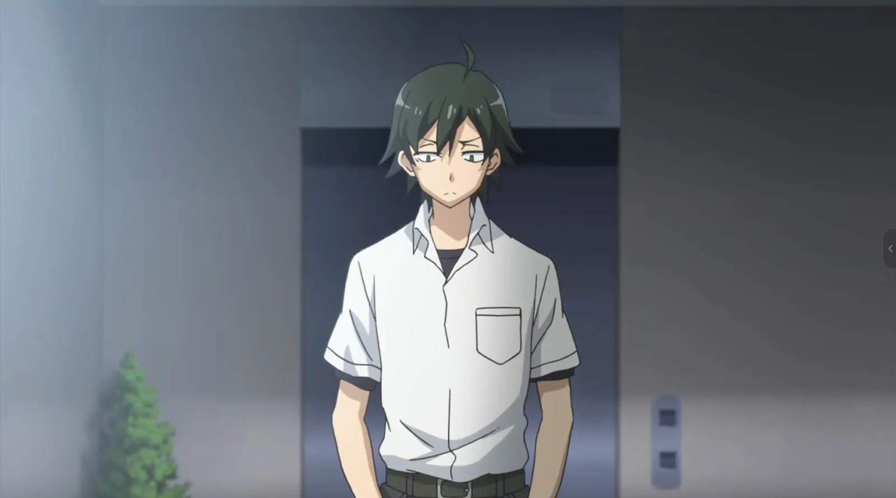

他先把自己推到最难看的位置。
每次出事，他最熟练的解法都是让所有人的矛盾落到自己身上。事情解决了，他也顺便证明了：看吧，我本来就是最不值钱的那个。
Hikigaya Hachiman
0%
画面写着：青春是谎言，是罪恶；影像停在这句判词上。
从“青春是谎言”开始，认识他。
向下 · 认识说这句话的人

《我的青春恋爱物语果然有问题》· 主人公
向 下 · 先认识他

01 / 人物简介 Profile
大老师是这部作品的主角。成绩不差，脑子很快，也不是完全交不到朋友；他只是很早就认定，很多热闹靠的是气氛、顺从和谁都不去戳破的谎话。
于是他先把自己放到人群外面。与其等着被关系推开，不如提前声明自己不需要它。这让他显得刻薄，也让他拥有一种过分敏锐的观察力。
进入侍奉部后，他和雪之下雪乃、由比滨结衣一起接下同学们的委托。大老师解决问题时，常会先看见所有人想藏起来的那一面，再把最难看的后果揽到自己身上。
这不是单纯的聪明，也不是值得歌颂的牺牲。他把受伤当作判断，把自我否定当成安全距离；故事真正要处理的，是他能不能承认自己也想被好好对待。
他看得很清楚。
只是总把自己排除在答案之外。

02 / 清醒 Clarity
大老师说话总像站在教室最后一排。青春、友情、善意，别人拿来相信的东西，他会先翻到背面，看一眼它究竟遮住了什么。
他不相信“大家好好相处”就能解决问题。有人维持体面，就一定有人吞下难堪；有人扮演温柔，就可能只是不想承担说真话的后果。他的判断很难听，可最麻烦的是，往往说中了。
高中时候的我看这个，卧槽这也太帅了吧。他的那些话叛逆、特立独行，又像从一个更高的位置俯视人群。那时候我觉得，这才叫人间清醒。
如果他说错了，事情反而简单。
难办的是他说对了。

03 / 孤傲 Arrogance
我身上也有一点“嘉豪”。高中时的我确实会把孤独穿得很帅：故作松弛，故作忧郁，嘴上说根本不在乎有没有人看见，心里又渴望自己被人看见。
但这解释不了全部。那时候的我也是真的自视甚高。不是“没人理我，所以假装不需要”的体面说法。我确实傲慢地看不起周围所有人，觉得他们的热闹无聊、规则虚伪、判断浅薄。我活在自己的世界里，而且并不觉得那有什么需要被纠正。
大老师吸引我的地方也在这里。他不是一个等着被谁拯救的可怜人。他的孤僻里有受伤，也有骄傲；他真的认为很多集体共识经不起推敲，也真的不愿意为了合群把自己削平。
所以我不会再把我们所有的孤独都解释成防御。有些时候，我们就是宁愿站在外面，也不愿意和他们一样。
孤傲的灵魂无需羁旅之地。
至少当时的我，真心这么相信。
他管这个叫
清醒。
这不是清醒。
这是盔甲。
他把会受伤的部分藏在里面，
只把最硬的一面留给世界。
“如果说真相是残酷的，
真実が残酷だというのなら、きっと嘘は優しいのだろう。だから、優しさは嘘だ。
那谎言一定是温柔的吧。
所以，温柔即是谎言。”
05 / 卸甲 Unarm
用光标或手指慢慢擦掉盔甲；也可以按回车直接卸下。
盔甲下面，不是软弱。
是他不肯交出去的真心。
不是突然变得合群。
只是终于承认，自己也有想要的东西。
每次出事，他最熟练的解法都是让所有人的矛盾落到自己身上。事情解决了，他也顺便证明了：看吧，我本来就是最不值钱的那个。
高中时的我偏偏觉得这很帅。因为我也会抢先把自己放低。不是所有事真都怪我，而是这样至少还能决定，自己以什么样子输掉。
前者只会受伤，后者却要把愿望交到别人手里。受伤至少是熟悉的。所以他的自我牺牲里有善意，也有自卑、控制和害怕被拒绝。
很蠢。
但也确实很帅。
雪乃八幡结衣／团子
侍奉部的核心是三个人。雪之下和八幡一样锋利，由比滨更温柔，也更害怕关系破掉。最难解决的，恰好是三个人谁都不肯说明白的感情。
我想要的不是对所有人都一样的温柔，而是“只有我这里不一样”。可靠近以后，我也会敏感、回避、先把人推开——我在意的是，自己有没有被区别地看见。
“多考虑一下别人的感受啊。
人の気持ち、もっと考えてよ。なんでいろんなことが分かるのに、それが分からないの？
为什么你明明什么都懂，却偏偏不懂这个呢？”
“真物”不是一句高级台词。他只是受不了所有人都很体贴、都不说真话、都假装关系没有坏。他想要的不是正确关系，而是一段不用反复猜测的关系。
向下滚动 · 三个人的关系会在同一张纸面里逐层显影
08 / 开口 Say It
真到开口时，却像有东西堵在喉咙。后来干脆用玩笑、冷脸，或者一句“算了”代替。
第一次承认自己有愿望，当然会说得很难看。所以我理解他为什么直到最后，才喊出“我想要真物”。
他只是终于不想再靠误会和体贴的客套，把一段关系继续拖下去。
他喊的是“我想要真物”。
我听见的是：我不想再装作自己什么都不需要了。
他傲慢、刻薄、拧巴，
也经常把事情做得很难看。
可他仍然想要真物。
高中时，我喜欢他，因为我觉得我们是同一种人。
我们都站在人群外面，傲慢地活在自己的世界里。
那份傲慢是真的。它后面的孤独也是真的。
やはり俺の青春ラブコメはまちがっている。